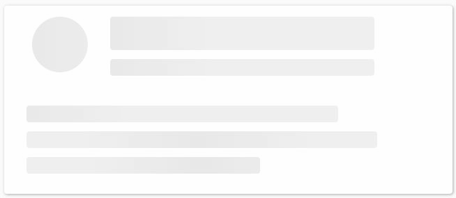

<div class="flex justify-center md:text-base text-sm">
  <main class="h-screen p-2 md:px-40">
    <div class="search sticky top-0 z-50 py-4 flex gap-4 justify-center items-center">
      <!-- Search input and button -->
      <div class="rounded-lg p-2 bg-gray-200 border-current flex items-center">
        <input type="text" [(ngModel)]="username" class="outline-none bg-transparent" autofocus
          placeholder="Enter GitHub username">
        <button (click)="searchRepositories()" class="material-symbols-outlined">search</button>
      </div>

      <!-- Page size dropdown -->
      <div>
        <select [(ngModel)]="pageSize" (change)="searchRepositories()"
          class="text-white rounded-2xl p-1 bg-blue-400 outline-none">
          <option value="10">10</option>
          <option value="20">20</option>
          <option value="50">50</option>
          <option value="100">100</option>
        </select>
      </div>
    </div>

    <!-- Loading indicator -->
    <div *ngIf="loading"></div>

    <!-- Content -->
    <div *ngIf="!loading" class="content">
      <!-- Profile info -->
      <div class="profile flex gap-4 items-center">
        <!-- Avatar -->
        <div class="img" *ngIf="user.avatar_url">
          
        </div>
        <!-- User info -->
        <div class="info">
          <p class="font-bold">{{user.name}}</p>
          <p>{{user.bio}}</p>
          <p *ngIf="user.location" class=" flex items-center gap-2"><span
              class="material-symbols-outlined">pin_drop</span>{{user.location}}</p>
        </div>

      </div>
      <div *ngIf="user.html_url" class="url my-2">
        <a href="{{user.html_url}}" target="_blank" class=" flex gap-2 items-center">
          <span class="material-symbols-outlined">
            link
          </span>
          {{user.html_url}}
        </a>
      </div>

      <!-- Repositories -->
      <div class="container">
        <div class="flex flex-wrap gap-2">
          <div *ngFor="let repo of repositories" class="w-full m-1 md:w-5/12">
            <!-- Repository item -->
            <div class="p-4 border-2 rounded-md h-full">
              <a [href]="repo.html_url" target="_blank" class="text-blue-400 font-bold text-2xl">{{ repo.name }}</a>
              <p class="my-2">{{repo.description}}</p>
              <!-- Languages -->
              <div *ngIf="repo.languages" class="flex flex-wrap gap-2">
                <div class="bg-blue-400 font-bold text-white rounded-3xl p-2" *ngFor="let language of repo.languages">{{
                  language
                  }}
                </div>
              </div>
            </div>
          </div>
        </div>
      </div>


      <nav *ngIf="repositories.length>0" aria-label="Page navigation example">
        <ul class=" -space-x-px text-sm flex justify-center">

          <li>
            <a href="#"
              class="flex items-center justify-center bg-blue-400 text-white px-3 h-8 leading-tight border border-gray-300 hover:bg-gray-100 hover:text-gray-700 dark:bg-gray-800 dark:border-gray-700 dark:text-gray-400 dark:hover:bg-gray-700 dark:hover:text-white">1</a>
          </li>
          <li>
            <a href="#"
              class="flex items-center justify-center px-3 h-8 leading-tight text-gray-500 bg-white border border-gray-300 hover:bg-gray-100 hover:text-gray-700 dark:bg-gray-800 dark:border-gray-700 dark:text-gray-400 dark:hover:bg-gray-700 dark:hover:text-white">2</a>
          </li>
          <li>
            <a href="#" aria-current="page"
              class="flex items-center justify-center px-3 h-8 leading-tight text-gray-500 bg-white border border-gray-300 hover:bg-gray-100 hover:text-gray-700 dark:bg-gray-800 dark:border-gray-700 dark:text-gray-400 dark:hover:bg-gray-700 dark:hover:text-white">3</a>
          </li>
          <li>
            <a href="#"
              class="flex items-center justify-center px-3 h-8 leading-tight text-gray-500 bg-white border border-gray-300 hover:bg-gray-100 hover:text-gray-700 dark:bg-gray-800 dark:border-gray-700 dark:text-gray-400 dark:hover:bg-gray-700 dark:hover:text-white">4</a>
          </li>
          <li>
            <a href="#"
              class="flex items-center justify-center px-3 h-8 leading-tight text-gray-500 bg-white border border-gray-300 hover:bg-gray-100 hover:text-gray-700 dark:bg-gray-800 dark:border-gray-700 dark:text-gray-400 dark:hover:bg-gray-700 dark:hover:text-white">5</a>
          </li>

        </ul>
        <div class=" flex justify-between items-center m-2">
          <p class=" rounded-3xl p-1 border-2 flex items-center"><span class="material-symbols-outlined">
              arrow_back
            </span>Older</p>
          <p class=" rounded-3xl p-1 border-2 flex items-center">Newer<span class="material-symbols-outlined">
              arrow_forward
            </span></p>
        </div>
      </nav>


    </div>
  </main>
</div>